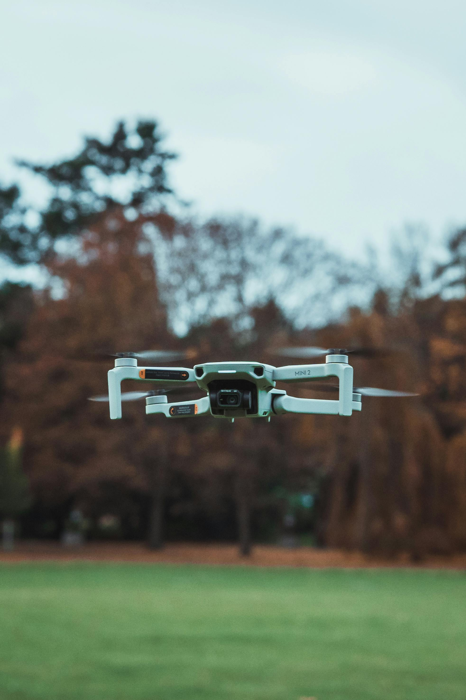

Dron MON MINI2 4 Pro
2699.99€
Descripción
Captura imágenes inéditas desde el aire con el dron MON MINI2 4 Pro, la solución profesional definitiva en drones para fotografía y vídeo de alta precisión.
Especificaciones Clave
- Memoria: 24 GB GDDR6X
- Número de rotores: 4
- Cámara principal: Hasselblad 100 MP, sensores CMOS dual
- Batería: 6654 mAh (ion litio)